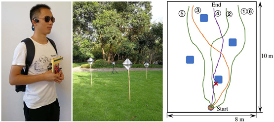
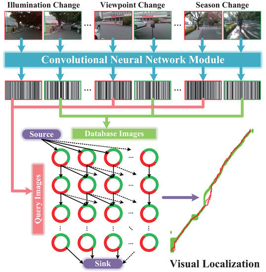
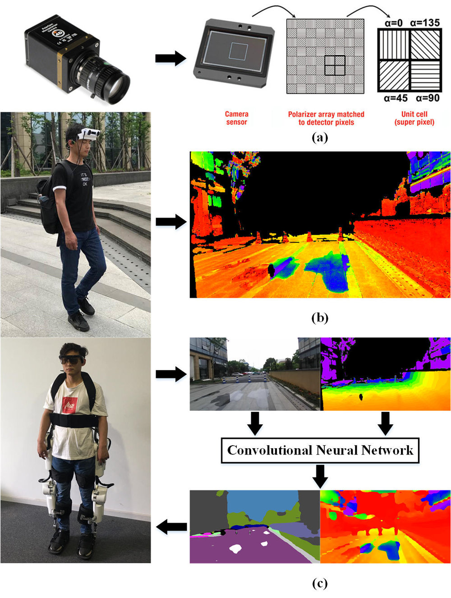
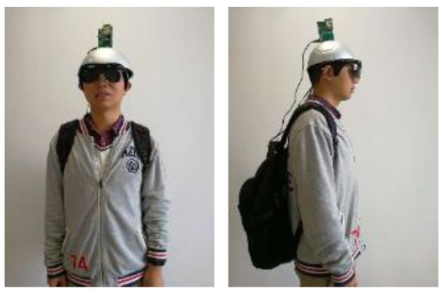
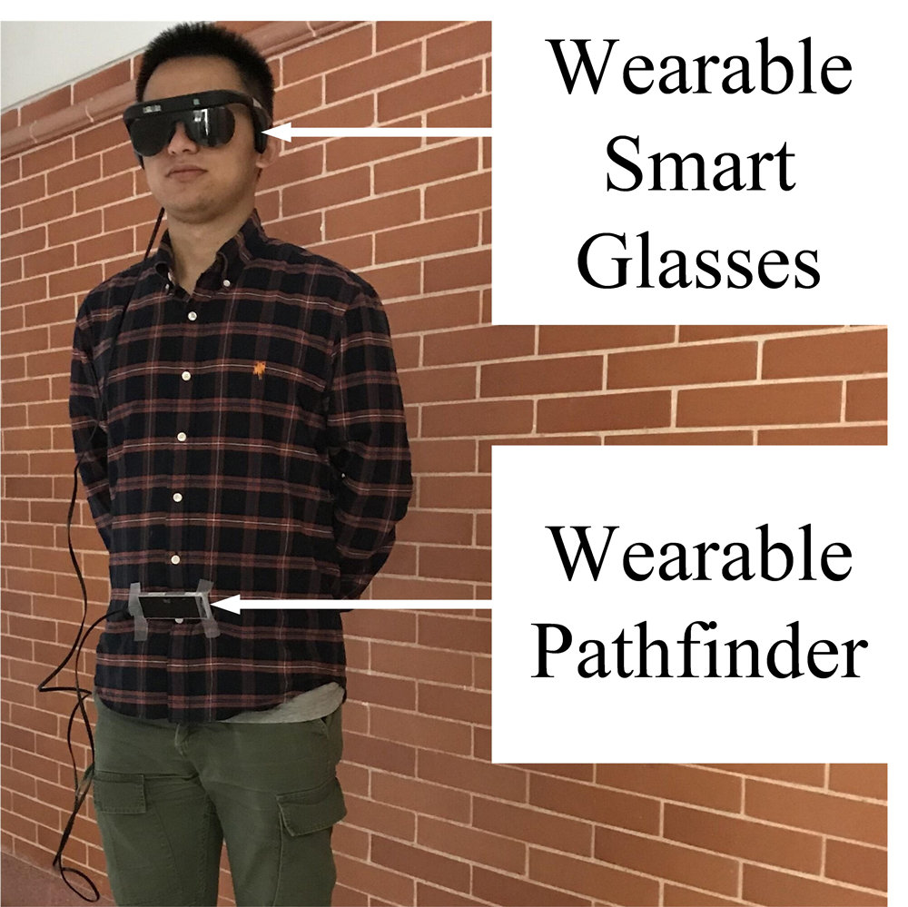
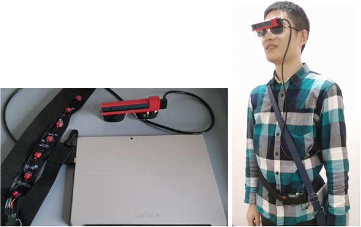

Welcome
Since 2014, I have been a Ph.D. student in College of Optical Science and Engineering at Zhejiang University with the major in Information Sensing and Instrumentation and a researcher at State Key Laboratory of Modern Optical Instrumentation. I received the B.S. degree in Measurement Technology and Instrumentation from Beijing Institute of Technology and the dual degree in Economics from Peking University.
Currently I'm a joint training Ph.D. student in Wangkaiwei Team advised by Prof. Kaiwei Wang and Prof. Jian Bai at Zhejiang University, and RobeSafe Research Group at University of Alcalá advised by Prof. Luis Miguel Bergasa.
Startup
I am the Co-founder and Chief Technology Officier at Hangzhou KR-VISION Technology Co., Ltd, a company dedicates to developing assistive technology for the visually impaired. I am also the Co-founder and Chief Technology Officier at Hangzhou SUR-IMAGE Techonology Co., Ltd, a startup with the aim to develop multi-modal stereo vision sensor for upper-level applications.
Research
I am interested in real-time computer vision with the goal of developing assistive technologies for autonomous vehicles, robotics and wearable systems to aid real-world navigation of vulnerable road users and visually impaired pedestrians.
My main research over the past few years has been on stereo vision, traversable area detection, semantic segmentation, depth estimation, polarization imaging, panoramic annular imaging, sensor fusion and obstacle avoidance.
Broadly I am interested in optical sensing, computer vision, 3D vision, deep learning, assistive technology, intelligent vehicles, intelligent transportation systems, human-machine systems, robotics and real-time computing.
Publications
|
K. Yang, X. Hu, L.M. Bergasa, E. Romera, K. Wang. PASS: Panoramic Annular Semantic Segmentation. Submitted to IEEE Transactions on Intelligent Transportation Systems, 2019. |
 |
K. Yang, L.M. Bergasa, E. Romera, K. Wang. Robustifying Semantic Cognition of Traversability across Wearable RGB-Depth Cameras. Applied Optics, 2019. [Highlighted as an Editor's Pick] [PDF] [DATA] [CODE] |
|
W. Hu, K. Wang, K. Yang, R. Cheng, Y. Ye, L. Sun, C. Wang. A Comparative Study in Real-Time Scene Sonification for Visually Impaired People. Submitted to IEEE Transactions on Human-Machine Systems, 2019. |
 |
N. Long, K. Wang, R. Cheng, W. Hu, K. Yang. Unifying Obstacle Detection, Recognition and Fusion Based on Millimeter Wave Radar and RGB-Depth Sensors for the Visually Impaired. Review of Scientific Instruments, 2019. [HTML] [PDF] |
|  |
N. Long, K. Wang, R. Cheng, K. Yang, W. Hu, J. Bai. Assisting the visually impaired: Multi-target warning through millimeter wave radar and RGB-depth sensors. Journal of Electronic Imaging, 2019. [PDF] |
|
K. Xiang, K. Wang, K. Yang. Importance-Aware Semantic Segmentation with Efficient Pyramidal Context Network for Navigational Assistant Systems. Submitted to IEEE Intelligent Transportation Systems Conference (ITSC), Auckland, New Zealand, October 2019. [CODE] |
|
R. Cheng, K. Wang, S. Lin, W. Hu, K. Yang, X. Huang, H. Li, D. Sun, J. Bai. Panoramic Annular Localizer: Tackling the Variation Challenges of Outdoor Localization Using Panoramic Annular Images and Active Deep Descriptors. Submitted to IEEE Intelligent Transportation Systems Conference (ITSC), Auckland, New Zealand, October 2019. [CODE] |
|
X. Hu, K. Yang, L. Fei, K. Wang. ACNet: Attention Based Network to Exploit Complementary Feautres for RGBD Semantic Segmentation. Accepted by IEEE International Conference on Image Processing (ICIP), Taipei, China, September 2019. [CODE] |
|
D. Sun, K. Yang, K. Wang. A Multi-Modal Vision Sensor for Autonomous Driving. Submitted to SPIE Security + Defence Symposium, Strasbourg, France, September 2019. |
|
X. Hu, K. Wang, K. Yang, L. Fei. An Indoor Real-Time RGBD Semantic Segmentation System for Visually Impaired People Based on ACNet. Submitted to SPIE Security + Defence Symposium, Strasbourg, France, September 2019. |
|
K. Xiang, K. Wang, K. Yang. Real-Time Semantic Segmentation Network Towards High Precision and Recall for Navigation Assistance Systems. Submitted to SPIE Security + Defence Symposium, Strasbourg, France, September 2019. |
|
Y. Xu, K. Wang, K. Yang, J. Fu, J. Shi. CNN-Based Real-Time Semantic Segmentation of Panoramic Images. Submitted to SPIE Security + Defence Symposium, Strasbourg, France, September 2019. |
|
C. Xu, K. Wang, K. Yang, R. Cheng, J. Bai. Semantic scene understanding on mobile device with illumination invariance for the visually impaired. Submitted to SPIE Security + Defence Symposium, Strasbourg, France, September 2019. |
|
L. Sun, K. Wang, K. Yang, K. Xiang. Night-to-Day Image Translation for Semantic Segmentation. Submitted to SPIE Security + Defence Symposium, Strasbourg, France, September 2019. |
|
Y. Fang, K. Wang, R. Cheng, K. Yang, J. Bai. Visual place recognition based on multi-level descrirptors for the visually impaired people. Submitted to SPIE Security + Defence Symposium, Strasbourg, France, September 2019. |
|
J. Shen, K. Wang, K. Xiang, H. Chen, K. Yang, L. Fei, H. Li and X. Hu. Depth Estimation Based on Cross-Modal Image Fusion. Submitted to SPIE Security + Defence Symposium, Strasbourg, France, September 2019. |
|
K. Yang, X. Hu, L.M. Bergasa, E. Romera, X. Huang, D. Sun, K. Wang. Can we PASS beyond the Field of View? Panoramic Annular Semantic Segmentation for Real-World Surrounding Perception. Accepted by IEEE Intelligent Vehicles Symposium (IV), Paris, France, June 2019. [DATA+CODE] |
|
E. Romera, L.M. Bergasa, K. Yang, J.M. Álvarez, R. Barea. Bridging the Day and Night Domain Gap for Semantic Segmentation. Accepted by IEEE Intelligent Vehicles Symposium (IV), Paris, France, June 2019. [DATA] |
 |
K. Xiang, K. Wang, L. Fei, K. Yang. Store sign text recognition for wearable navigation assistance system. In International Conference on Graphics, Images and Interactive Techniques (CGIIT), Guangzhou, China, February 2019. [PDF] [BLOG] |
 |
Y. Ye, K. Wang, W. Hu, H. Li, K. Yang, L. Sun, Z. Chen. A wearable vision-to-audio sensory substitution device for blind assistance and the correlated neural substrates. In International Conference on Graphics, Images and Interactive Techniques (CGIIT), Guangzhou, China, February 2019. [PDF] |
 |
K. Yang, K. Wang, L.M. Bergasa, E. Romera, W. Hu, D. Sun, J. Sun, R. Cheng, T. Chen, E. López. Unifying Terrain Awareness for the Visually Impaired through Real-Time Semantic Segmentation. Sensors, 2018. Belongs to the Special Issue [Wearable Smart Devices] [HTML] [PDF] [DATA] [TensorFlow] [PyTorch] [NVIDIA TX1/TX2 Implementation] |
 |
K. Yang, K. Wang, H. Chen, J. Bai. Reducing the minimum range of a RGB-depth sensor to aid navigation in visually impaired individuals. Applied Optics, 2018. [Highlighted as an Editor's Pick] [PDF] |
|  |
S. Lin, R. Cheng, K. Wang, K. Yang. Visual localizer: outdoor localization based on convnet descriptor and global optimization for visually impaired pedestrians. Sensors, 2018. Belongs to the Special Issue [Sensor Technologies for Caring People with Disabilities] [HTML] [PDF] [DATA] |
 |
R. Cheng, K. Wang, K. Yang, N. Long, J. Bai, D. Liu. Real-time pedestrian crossing lights detection algorithm for the visually impaired. Multimedia Tools and Applications, 2018. [PDF] [DATA] |
 |
K. Yang, R. Cheng, L.M. Bergasa, E. Romera, K. Wang, N. Long. Intersection perception through real-time semantic segmentation to assist navigation of visually impaired pedestrians. In IEEE International Conference on Robotics and Biomimetics (ROBIO), Kuala Lumpur, Malaysia, December 2018. [PDF] [DATA] [BLOG] |
 |
K. Yang, L.M. Bergasa, E. Romera, J. Wang, K. Wang, E. López. Perception framework of water hazards beyond traversability for real-world navigation assistance systems. In IEEE International Conference on Robotics and Biomimetics (ROBIO), Kuala Lumpur, Malaysia, December 2018. [PDF] |
|  |
K. Yang, L.M. Bergasa, E. Romera, X. Huang, K. Wang. Predicting polarization beyond semantics for wearable robotics. In IEEE-RAS International Conference on Humanoid Robots (Humanoids), Beijing, China, November 2018. [Spotlight Paper] [PDF] [DATA] [PyTorch] [BLOG] |
 |
J. Wang, K. Yang, W. Hu, K. Wang. An environmental perception and navigational assistance system for visually impaired persons based on semantic stixels and sound interaction. In IEEE International Conference on Systems, Man, and Cybernetics (SMC), Miyazaki, Japan, October 2018. [PDF] [BLOG] |
|  |
N. Long, K. Wang, R. Cheng, W. Hu, K. Yang. Low Power Millimeter Wave Radar System for the Visually Impaired. In IET International Radar Conference (IRC), Nanjing, China, October 2018. [Excellent Paper Award] [PDF] [BLOG] |
 |
Y. Ye, K. Wang, W. Hu, K. Yang. Study on the brain mechanisum in visual assistance for the blind. In West-Lake Photonics Symposium (WPS), Hangzhou, China, October 2018. [PDF] |
 |
Z. Huang, K. Wang, K. Yang, R. Cheng, J. Bai. Glass detection and recognition based on the fusion of ultrasonic sensor and RGB-D sensor for the visually impaired. In West-Lake Photonics Symposium (WPS), Hangzhou, China, October 2018. [PDF] |
 |
N. Long, K. Wang, R. Cheng, K. Yang, W. Hu, J. Bai. Mutiple Target Warning through Millimeter Wave Radar and RGB-Depth Sensors. In West-Lake Photonics Symposium (WPS), Hangzhou, China, October 2018. [PDF] |
 |
K. Yang, L.M. Bergasa, E. Romera, D. Sun, K. Wang, R. Barea. Semantic perception of curbs beyond traversability for real-world navigation assistance systems. In IEEE International Conference on Vehicular Electronics and Safety (ICVES), Madrid, Spain, September 2018. [PDF] [DATA] [BLOG] |
 |
L. Fei, K. Wang, S. Lin, K. Yang, R. Cheng and H. Chen. Scene text detection and recognition system for visually impaired in real world. In SPIE Security + Defence Symposium, Berlin, Germany, September 2018. [Best Student Paper] [PDF] [BLOG] |
 |
N. Long, K. Wang, R. Cheng, K. Yang, J. Bai. Fusion of Millimeter wave Radar and RGB-Depth sensors for assisted navigation of the visually impaired. In SPIE Security + Defence Symposium, Berlin, Germany, September 2018. [PDF] |
 |
Z. Huang, K. Wang, K. Yang, R. Cheng, J. Bai. Glass Detection and Recognition Based on the Fusion of Ultrasonic Sensor and RGB-D Sensor for the Visually Impaired. In SPIE Security + Defence Symposium, Berlin, Germany, September 2018. [PDF] |
 |
R. Cheng, K. Wang, L. Lin, K. Yang. Visual Localization of Key Positions for Visually Impaired People. In International Conference on Pattern Recognition (ICPR), Beijing, China, August 2018. [PDF] [DATA] [CODE] [BLOG] |
 |
S. Lin, K. Wang, K. Yang, R. Cheng. KrNet: A Kinetic Real-time Convolutional Neural Network for Navigational Assistance. In International Conference on Computers Helping People with Special Needs (ICCHP), Linz, Austria, July 2018. [PDF] [BLOG] |
 |
K. Yang, L.M. Bergasa, E. Romera, R. Cheng, T. Chen, K. Wang. Unifying terrain awareness through real-time semantic segmentation. In IEEE Intelligent Vehicles Symposium (IV), Suzhou, China, June 2018. [PDF] [VIDEO] [DATA] [TensorFlow] [PyTorch] [BLOG] |
|  |
K. Yang, K. Wang, S. Lin, J. Bai, L.M. Bergasa, R. Arroyo. Long-range Traversability Awareness and Low-lying Obstacle Negotiation with RealSense for the Visually Impaired. In International Conference on Information Science and System (ICISS), Jeju Island, South Korea, April 2018. [PDF] |
 |
H. Chen, K. Wang, K. Yang. Improving RealSense by Fusing Color Stereo Vision and Infrared Stereo Vision for the Visually Impaired. In International Conference on Information Science and System (ICISS), Jeju Island, South Korea, April 2018. [PDF] |
 |
K. Yang, K. Wang, S. Lin, J. Bai, L.M. Bergasa, R. Arroyo. Long-range Traversability Awareness and Low-lying Obstacle Negotiation with RealSense for the Visually Impaired. In International Conference on Frontiers of Image Processing (ICFIP), Barcelona, Spain, March 2018. [Best Paper Award] [PDF] [BLOG] |
 |
H. Chen, K. Wang, K. Yang. Improving RealSense by Fusing Color Stereo Vision and Infrared Stereo Vision for the Visually Impaired. In International Conference on Frontiers of Image Processing (ICFIP), Barcelona, Spain, March 2018. [PDF] |
 |
K. Yang, K. Wang, R. Cheng, W. Hu, X. Huang, J. Bai. Detecting traversable area and water hazards for the visually impaired with a pRGB-D sensor. Sensors, 2017. [HTML] [PDF] [DATA] |
|  |
K. Yang, K. Wang, X. Zhao, R. Cheng, J. Bai, Y. Yang, D. Liu. IR stereo RealSense: Decreasing minimum range of navigational assistance for visually impaired individuals. Journal of Ambient Intelligence and Smart Environments, 2017. [PDF] |
 |
R. Cheng, K. Wang, K. Yang, N. Long, W. Hu, H. Chen, J. Bai, D. Liu. Crosswalk navigation for people with visual impairments on a wearable device. Journal of Electronic Imaging, 2017. [DATA] |
|
X. Huang, J. Bai, K. Wang, Q. Liu, Y. Luo, K. Yang, X. Zhang. Target enhanced 3D reconstruction based on polarization-coded structured light. Optics Express, 2017. [HTML] [PDF] |
 |
K. Yang, K. Wang, W. Hu, J. Bai. Expanding the detection of traversable area with RealSense for the visually impaired. Sensors, 2016. [HTML] [PDF] |
 |
X. Zhao, K. Wang, K. Yang, W. Hu. Unconstrained face detection and recognition based on RGB-D camera for the visually impaired. In International Conference on Graphic and Image Processing (ICGIP), Tokyo, Japan, August 2016. [PDF] |
 |
K. Yang, K. Wang, R. Cheng, X. Zhu. A new approach of point cloud processing and scene segmentation for guiding the visually impaired. In Iet International Conference on Biomedical Image and Signal Processing (ICBISP), Beijing, China, November 2015. [PDF] |
 |
R. Cheng, K. Wang, K. Yang, X. Zhao. A ground and obstacle detection algorithm for the visually impaired. In Iet International Conference on Biomedical Image and Signal Processing (ICBISP), Beijing, China, November 2015. [PDF] |